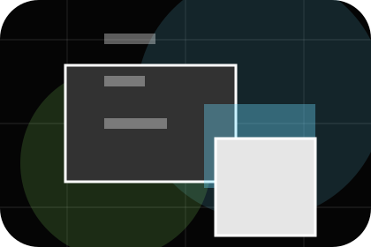
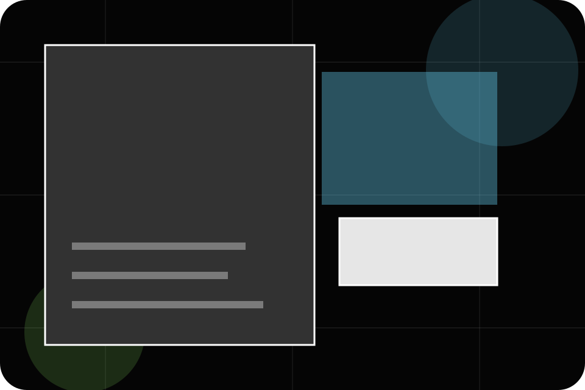
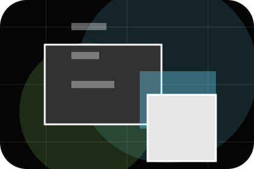
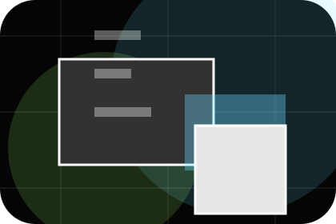
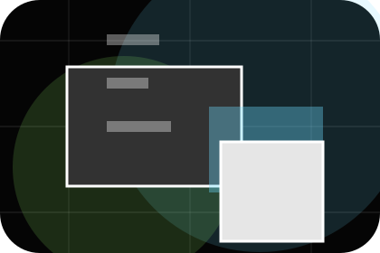
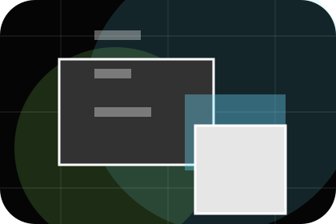
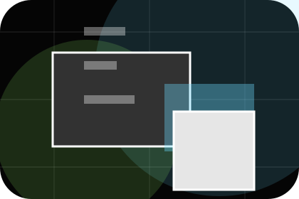
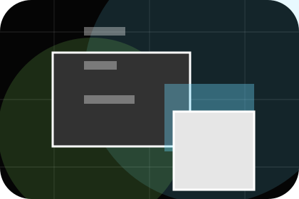
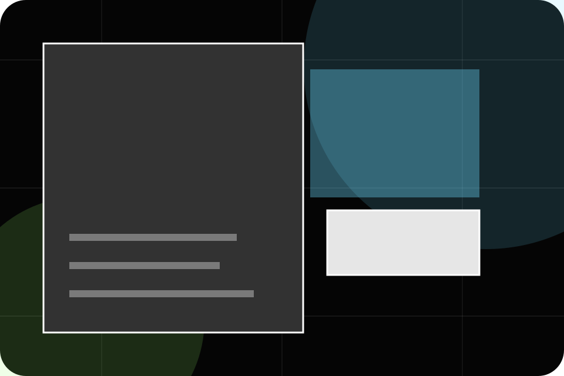
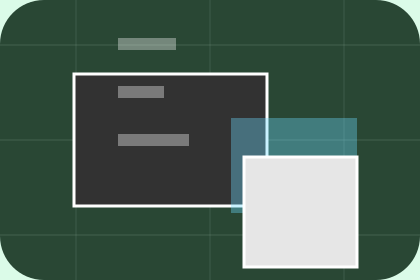

Details
What information helps Spark respond with a useful answer instead of a generic reply.
Contact / 01
Contact opens as a clear marketing decision hub: what Spark offers, who it helps, why it matters, and which route to take first.
The first screen combines positioning, proof, primary action, and fast internal navigation, so people can act immediately or compare the rest of the contact route with context.
Immersive case-study hero
Select the closest route and Spark keeps the next step, proof, and follow-up expectation aligned with results and creative confidence.

Contact / 02
Brief makes the contact path concrete: what to send, how the response works, and what Spark needs before visitors send a campaign brief.
The section reduces contact friction by naming the channel, expected detail, privacy path, and response expectation instead of dropping visitors into a generic form.
Send Campaign Brief
What information helps Spark respond with a useful answer instead of a generic reply.
How the visitor should think about response, urgency, location, or availability.

The expected next message keeps scope, timing, and the first practical step clear.
Contact / 03
Budget makes the contact path concrete: what to send, how the response works, and what Spark needs before visitors send a campaign brief.
The section reduces contact friction by naming the channel, expected detail, privacy path, and response expectation instead of dropping visitors into a generic form.
Send Campaign BriefSpark keeps budget practical: send the key details, choose the right contact route, and know what kind of reply to expect.
Send Campaign BriefContact / 04
Timeline explains the operating sequence so visitors can see how the first request becomes a clear recommendation and follow-up.
The steps are written from the visitor side: what they do first, what Spark clarifies, what they receive, and how support continues.
Send Campaign BriefHow visitors begin this route and what detail is useful at the first step.
What Spark reviews, filters, or explains before recommending the next move.

What the visitor receives afterward, including support, proof, or a handoff to the next page.
Contact / 05
Goals makes the contact path concrete: what to send, how the response works, and what Spark needs before visitors send a campaign brief.
The section reduces contact friction by naming the channel, expected detail, privacy path, and response expectation instead of dropping visitors into a generic form.
Send Campaign BriefWhat information helps Spark respond with a useful answer instead of a generic reply.
Contact / 06
Call makes the contact path concrete: what to send, how the response works, and what Spark needs before visitors send a campaign brief.
The section reduces contact friction by naming the channel, expected detail, privacy path, and response expectation instead of dropping visitors into a generic form.
Send Campaign BriefWhat information helps Spark respond with a useful answer instead of a generic reply.

How the visitor should think about response, urgency, location, or availability.

The expected next message keeps scope, timing, and the first practical step clear.
Contact / 07
Proposal makes the contact path concrete: what to send, how the response works, and what Spark needs before visitors send a campaign brief.
The section reduces contact friction by naming the channel, expected detail, privacy path, and response expectation instead of dropping visitors into a generic form.
Send Campaign BriefWhat information helps Spark respond with a useful answer instead of a generic reply.
How the visitor should think about response, urgency, location, or availability.
The expected next message keeps scope, timing, and the first practical step clear.
Contact / 08
Response makes the contact path concrete: what to send, how the response works, and what Spark needs before visitors send a campaign brief.
The section reduces contact friction by naming the channel, expected detail, privacy path, and response expectation instead of dropping visitors into a generic form.
Send Campaign BriefWhat information helps Spark respond with a useful answer instead of a generic reply.
How the visitor should think about response, urgency, location, or availability.
The expected next message keeps scope, timing, and the first practical step clear.
Contact / 09
Submit makes the contact path concrete: what to send, how the response works, and what Spark needs before visitors send a campaign brief.
The section reduces contact friction by naming the channel, expected detail, privacy path, and response expectation instead of dropping visitors into a generic form.
Send Campaign Brief

What information helps Spark respond with a useful answer instead of a generic reply.
Contact / 10
Spark closes the contact route with a clear action, a quick reminder of the value, and a low-friction way to send a campaign brief.
Visitors who are ready can use the primary action. Visitors who are still comparing can scan the section links, proof, and support routes before they send a campaign brief.
Send Campaign BriefThe final block keeps the choice simple: act now, compare one more proof route, or send enough detail for a focused response.
Send Campaign Brief
results and creative confidence
A marketing agency site with immersive black work panels, sharp case filters, results proof, and brief routes. Contact ends with a direct path to send a campaign brief, plus enough context for visitors who still need to compare.

Send Campaign BriefInformation is provided for planning and should be reviewed for the final client, location, and operating rules.